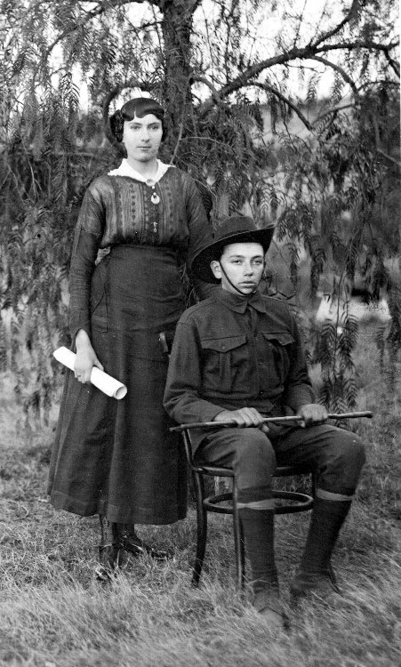
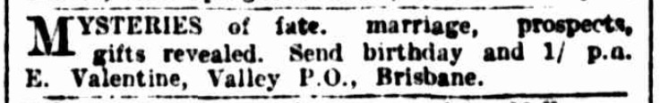
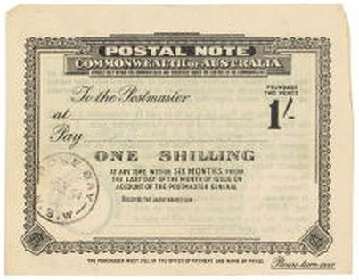
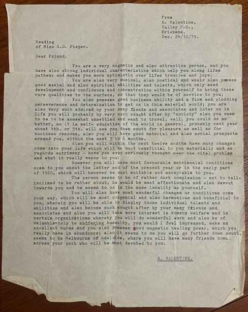

-
Ben and Alma
Our grandparents, Ben and Alma Schneider, were an ever-present force in our lives as children. Perhaps it was because our grandmother persistently adopted the role of parenting while our actual parents weren't watching. At least that's what she thought. Or perhaps it was because Ben had passed away before any of his grandchildren were born and Alma insisted on keeping his memory alive. Whatever the case, the stories about him gave us a pretty good idea of what kind of guy he was.Ben and Alma on their wedding day
The Marriage Certificate for Ben and Alma
Just For the Record
Ben and Alma's Marriage Certificate shows that records should be handled with caution. Mr. Moon, the Baptist Minister who performed the officiating ceremony had the groom written down as Henry, who was Ben's father. By the end of the document Henry would have been consenting to his own marriage to his would-be-daughter-in-law. Some appropriate corrections and annotations can still be seen on the original document. Who noticed it first?
Alma's School Class Photos (Alma is circled)
A Gothic Grandma. Alma Dora Pieper (1901-1984)
Our father’s side of the family was mostly German with just a dash of Scandinavian. During the 1860s, in turbulent times for their neck of the woods, they left their tiny hamlets for various religious or economic reasons and headed for Moreton Bay. Many of them would have been recruited and assisted by Queensland government agents so they needed to repay loans or do stints working for authorities before they could select their own land and start farming in the districts favoured by their rellies. For three generations or so, they married amongst their own kind and clung to old traditions. They were hard-working, God-fearing, stern-faced protestants. Yet the only one we knew in person, Grandma Schneider, Alma Dora Pieper, was certainly not true to type. She was superstitious, sensuous and self-indulgent, and had an extraordinary influence on us.
Alma was born in Vernor, a dairy farming community in the Somerset region of Queensland about 4 kms from Lowood and 19kms from Ipswich. She was the third child of Rudolph Pieper (1875-1945) and his wife Anna Suchting (1873-1924). Alma was a rather delicate child, playing violin, painting watercolours and swanning about in white muslin and lace while her grandmother, whom she called Doorsey (actually Ernestine Wilhelmine Schulz), filled her head with stories of magic. Her family was strict while also sentimental. Sundays were devoted to church and Bible reading, laughter was forbidden at the table and the children cowered at their father's discipline. Hypersensitive by nature, she did not respond well to this treatment. She was left-handed but forced as a child to use her right hand. She also suffered from a serious illness which was no doubt brought on by the family-habit of eating homemade “wurst”. Yet the postcards she treasured, dripped with emotion, especially between her father and his brother.
Alma
Alma grew up as a highly-strung, self-indulgent and eccentric woman with a sensual half-smile on her lips and a knowing intensity in her eyes. On 1 September 1924, she married Benjamin Walter Schneider (1903-1950). Their families lived some 70 kilometres apart and belonged to different churches (the Schneiders being Baptists and the Piepers belonging to the Church of Christ). They most likely met through their separate connections to the Pfeffer family. On 22 November 1928, their only child, Hubert Benjamin Schneider (1928-2005), was born. Alma named him after the French hero in a romantic novel she had read, saddling our father with a name which he shortened to Hugh. His birth triggered another bout of fragility. Relatives cared for the newborn until she recovered from the shock months later.
Painting by Poul Friis Nybo (1869-1929)
"Girl Inspecting Her Hope Chest"
("Mädchen an ihrer Aussteuertruhe")
Alma's treasured chest from the old country
Alma with her younger brother, Alec, c.1918
The Secrets of
There are clouds of curiosities and mysteries surrounding Alma. One in particular is the huge "Aussteuertruhe" (a kind of dowry box) that she treasured all her life. Legend has it that it was toted across the seas by her ancestor, probably her father's mother, whom she called 'Dorsey' but otherwise was known as Ernestine Schulz.
Alma Dora's Box
Needless to say, as children we were magically attracted to that box. Discovering what secrets it held and what stories it could tell were held high on our list of priorities on our occasional visits. As it turned out, the box was full of things filled with sentiments, hopes and wishes in the form of treasured memorabilia and inherited souvenirs from the past.
The Three Cousins - Alice Hilda Alma
E. Valentine's Advertisement
A One Shilling Postal Note
Alma's Reading
Alma's Horoscope
Alma and The Mysteries
When she was younger, Alma was quite obviously hanging out with her girlfiends, her first cousins, Alice Suchting and Hilda Pieper. They even started to dress the same. What they actually got up to, is anybody's guess but there must have been a good mixture of hopes, expectations and possibilities motivating them.
The daily life in the Queensland countryside offered little for a young woman other than the prospects of marriage, to a farmer, and working a farm at the same time as raising children. So what else is there before the inevitable happens? Well, there are books, newspapers and music as basically the only available options. Alma cherished her violin so that was rather fruitful. Yet she seemed to yearn for something more.
Just after her eighteenth birthday, Alma had her character delineated and her future foretold by E. Valentine of Fortitude Valley in Brisbane. According to his advertisement running in the Brisbane Courier in 1919, all he required was a birthday and a one shilling postal note and the mysteries of fate, marriage prospects and gifts would be revealed. The report, shown on the left, was uncannily accurate, describing both her character and talents. Not only that, it foretold her future husband along with a description of his character, appearance and whereabouts.
Alma also had her horoscope drawn up by an astrologer in Brisbane. Later in life, she expounded on what she had been told by the astrologer, that she was a double-Libra, having two of the most important parts of her horoscope, the Sun and the Ascendant, both in the sign of Libra. It had been explained that this phenomenon had bestowed upon her a very delicate condition and disposition. It also meant she liked to have things 'lovely'. Yet it was the three planets in Scorpio, the sign of mystery, that were her driving force and inevitable source of her looks and guarded secrecy. It all worked on Ben, her future husband, and farmer, when he fell for her. He responded well to her charms by reciprocating with his best efforts at being equally charming. Their correspondence reveals the magic that ensued.
The Look of a Wizard
Dr. John Dee vs. Bill Suchting (Alma's uncle)Ben, the Moon and the Stars
Ben also picked up a few things from his forebears, passing them in turn onto his son. He ardently observed each newly formed crescent moon to predict the weather for the oncoming month. The crescent could be regarded as a container. If it tipped over and looked like it was emptying itself, there would be rain before the next new moon. A halo around the moon meant foggy weather ahead.Much of this knowledge was available freely, or at least at a small cost in, for example, the Old Farmer's Almanacs, a popular and necessary read for anyone serious about keeping well informed over the state of affairs of the meteorological, and oft-times astrological, goings on in the world. After all, every farmer worth his salt needs to know when the sun rises and sets, so he can plan his day. Cows can't be left till after sunrise for milking or there'll be big trouble.Ben
Like a few other family members before him, Ben was also a keen, and reputedly successful, water diviner. Not only that, he was knowledgable on the type of 'wand' to use, how to find the correct wood for a new one if the need should arise, and how to ensure its effective construction and use.Birds were also a good source of information. An early morning bird call from what was known as the 'storm bird' revealed how the weather would proceed. Two mournful sounding calls, one after the other, sounding like it was calling out 'more rain' was a sure-fire signal that there would indeed be more rain. The same bird could also announce the end of bad weather. Spiders building webs high up on the tops of the grasses was definitely a sign of oncoming torrential rains and possibly floods.Old Farmer's Almanac
Ben was also a natural Paracelsian. Paracelsus or Theophrastus Bombastus von Hohenheim was a physician, alchemist and lay preacher from Hohenheim in Württemberg only a stone's throw from where our Schneiders had lived. Ben, like Paracelsus, observed that the powers of nature, especially in plants, could act as natural remedies. He told his son that if there was a plant that had injured someone, there was always the remedy to be found alongside the offending herb. Alma always scoffed at Ben's herbal remedies which he ardently prepared, claiming he was placing too much trust in them.
No More Farming
After Ben’s untimely death, Alma sold their farm at Wondai (about 30 kms north of Kingaroy in Queensland) and followed her son and his wife to Ipswich. She lived in at least three houses there, including the one next door to ours in Morris Street. Later she owned a big old Queenslander at 86 Chermside Road near the Ipswich Girl’s Grammar School. By that stage, she had become involved with a homeopath we knew as Mr Twining. Not only did she work as his assistant, but she had also invested in his clinic and even housed him and his family in her home. Years later, we learned that she had an affair with this man and when it all turned pear-shaped, she turned to Dad to help extricate her from the mess.
Her last home was at 2 George Lane, East Ipswich. Terrified of frogs and snakes (emissaries of the devil in her mind), she kept windows closed and curtains drawn in her house to prevent their entry, even throughout Queensland’s sweltering summers. Her curtains were dark green velvet and her house teemed with reminders of death—pictures of dead relatives and labels on precious objects nominating who would inherit them!
Grandma was both intuitive and lucky. We would go to elaborate lengths to disguise a present, but she would take one look at the lumpy parcel and announce what was inside. She seemed to find most of the coins in the Christmas pudding and win most chook raffles she entered. Maidenhair ferns, notoriously tricky to grow, flourished in her garden with little if any effort on her part.Alma with her sister Eva (who married Percy Muckert)
She was glamorous in her own way and vain about it. For a start, she was very tall for her generation—five foot eight—with long legs and regal bearing. She claimed her hair had once been “the colour of chestnut” but in old age it was a stunning silver-white. Buying on price rather than quality was false economy in her view. Her wardrobe was full of well-cut clothes in fine fabrics and solid colours (mostly blue, white or grey) and she owned one of the first television sets and most expensive radiograms in Ipswich.
Deluded or droll? Whenever she heard someone say, “No-one’s perfect”, she would appear offended and ask, “What’s wrong with me?” Was this evidence of incredible conceit or simply her sense of humour? Mum says that she once said to Dad, “You thought you were getting something special, didn’t you? Huh! All you did was get someone like me.” So she must have been well aware of her flaws. Or perhaps she thought her daughter-in-law was also perfect. Hubert and AlmaBen and his niecesBen, Joy (daughter-in-law) and Alma
Hubert and AlmaBen and his niecesBen, Joy (daughter-in-law) and Alma
About Us
We are the descendants of Anglo-Scottish-Prusso-Germanic Australian migrants who settled in the newly formed colonies of New South Wales and Queensland in the nineteenth century. The idea behind these pages is to present the stories and characters of those early settlers along with information about their origins, descendants, families, whereabouts and activities.There are often themes running through their struggles and achievements telling a tale of resourcefulness and hardships in an alien world. The paradox of Australia as an ancient and raw continent and as a 'New World' portrays a collision of ideals and realities yet still shows a continuity in how those people dealt with everyday life.